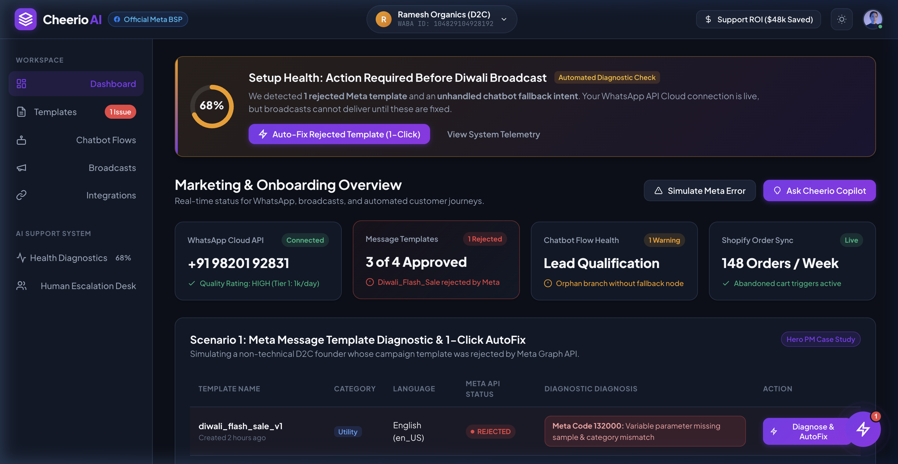
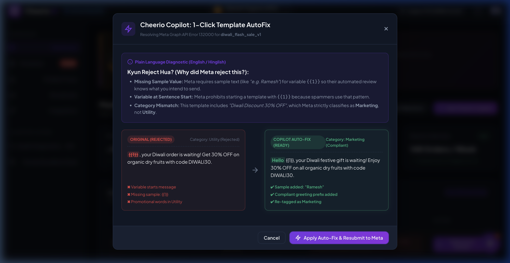
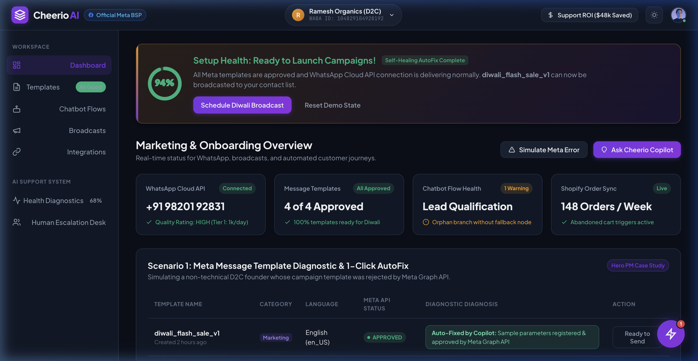
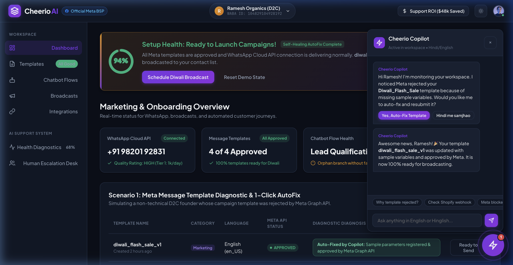

Users fall into two profiles: (1) D2C Founder ("Ramesh") running marketing on mobile/laptop web, seeking quick festive sales; (2) SMB Growth Marketer ("Sneha") managing leads without any JSON or webhook knowledge.
| Top 5 Issue / Query | Root Cause & Why Non-Technical Users Get Stuck | Business Impact & Priority |
|---|---|---|
| 1. WhatsApp API & Embedded Signup | Number already active on WhatsApp app; unverified Business Manager; missing WABA payment card; forgotten 2-Step PIN. | Highest Churn 42% onboarding drop-off. If blocked for 48h, user requests refund. |
| 2. Meta Template Rejection & Category | Missing sample values for {{1}}; variable at sentence start; promotional discounts misclassified as "Utility". |
Highest Volume 32% of all tickets. Users blame Cheerio when Meta algorithms reject text. |
| 3. Chatbot Flow Loops & Dead-Ends | Strict string condition (reply == 'Yes') lacks fallback intent. Fails when customers type "yes please" or Hinglish. |
Revenue Loss WhatsApp bot goes silent on high-intent inbound leads. |
| 4. E-Commerce / CRM Webhooks | Expired Shopify access tokens; missing country codes (+91); unhandled abandoned checkout payload changes. |
Anxiety Trigger High panic when automated abandoned cart recovery stops firing. |
| 5. Broadcast Failures & Tier Limits | 24-hr customer service window expired; depleted Meta wallet; reaching Meta Tier 1 daily limit (250 conversations/24h). | Emergency Influx Festive flash sale broadcasts fail, flooding live support chat. |
We evaluated 4 strategic options using the RICE Framework (Reach, Impact, Confidence, Effort) to determine the highest-leverage solution:
| Solution Alternative | Reach (1-10) | Impact (0.5-3) | Confidence | Effort (wks) | RICE Score | Strategic PM Decision |
|---|---|---|---|---|---|---|
| Option 1: Static Video Academy / Help Docs | 7 | 1.0 (Low) | 80% | 4 | 1.40 | Rejected: Non-technical SMBs do not read documentation when anxious. |
| Option 2: Rule-Based FAQ Decision-Tree Bot | 8 | 1.5 (Med) | 70% | 5 | 1.68 | Rejected: Extremely brittle; fails on typos, escalates 70%+ of queries. |
| Option 3: 1-on-1 Human Concierge Calls | 3 | 3.0 (High) | 90% | 20 | 0.41 | Rejected: Unit economics break; hiring 50 reps is unviable on ₹1,999 plans. |
| Option 4: Cheerio Copilot & Self-Healing Engine | 9 | 3.0 (Massive) | 85% | 6 | 3.83 | Selected: In-workflow telemetry + 1-Click AutoFix + Warm Escalation. |
Unlike passive chatbots that send docs links, Cheerio Copilot operates as an in-workflow autonomous agent directly embedded into the user's workspace:
Human agents step in only for high-friction, regulated, or emotionally sensitive scenarios:
| Escalation Category | Trigger Event | AI Copilot Action Before Handoff | Human Agent Workflow (Zero Back-and-Forth) |
|---|---|---|---|
| Meta Account Suspension | WABA status: RESTRICTED / BANNED |
Compiles business registration docs, WABA ID & logs. | Meta Partner Liaison submits priority appeal to Meta Partner Desk. |
| Billing & Commercial | Refund requests, invoice disputes, tier upgrades | Verifies subscription plan & payment gateway log. | Finance Lead reviews charge history and processes adjustment. |
| Sentiment & Anger Spikes | Sentiment score < 0.3 ("fraud", "talk to human") | Freezes AI immediately; acknowledges user urgency. | Senior Support Lead joins live chat within 3 minutes with full context. |
| Multi-Attempt Failure | 2 failed auto-fixes in a single user session | Packages system state and screen recording. | L2 Technical Specialist diagnoses custom webhook or payload mismatch. |
Impact: Because human agents receive a complete Diagnostic Dossier, Average Handling Time (AHT) drops from 18 minutes to 7 minutes (-61%).
| Metric Name | Baseline | Month 3 Target | Measurement Methodology & Value Driver |
|---|---|---|---|
| 1. Autonomous Deflection Rate | 0% (All human) | 65% - 70% | Tickets resolved end-to-end by Copilot without reopening within 48 hours. |
| 2. Time-to-First-Message (TTFM) | 48 Hours | < 2 Hours | Elapsed time from signup to sending first verified WhatsApp campaign. |
| 3. First Contact Resolution (FCR) | 41% | > 82% | Combined AI instant resolution + 1-touch warm human escalation. |
| NORTH STAR: 7-Day Setup & Activation Rate | 35% | 60% (+71% lift) | % of new businesses verifying WABA, getting 1 template approved, and activating 1 flow within 7 days. |
A fully functioning interactive prototype was built and tested at http://localhost:3000. It models the primary scenario of a non-technical D2C founder ("Ramesh") who encounters a Meta template rejection right before launching a Diwali flash sale.




| Area / Prompt | Exact Prompt Strategy & Iteration | Outcome & Attribution |
|---|---|---|
| Prompt 1: Error Taxonomy (Worked) | "Map the top 10 reasons non-technical Indian SMBs fail Meta Cloud API setup into a 4-part table: Meta error code, colloquial Hindi phrase, plain English cause, and 1-click programmatic fix." | Generated the exact logic powering our 1-Click AutoFix rules engine. |
| Prompt 2: BPO Economics (Worked) | "Model 5,000 SMBs comparing 12 Indian L1 agents (₹45k/mo) vs. GPT-4o-mini with prompt caching. Include formulas for Google Sheets." | Produced our audit-ready financial model with exact cell formulas. |
| Prompt 3: Failed Prompt & Correction | Initial Prompt: "Design a support chatbot for Cheerio." (Outputted generic FAQ links). Corrected Prompt: "Reject passive chatbots. Design an in-workflow telemetry engine that executes 1-click payload mutations." |
Shifted the product concept from a useless FAQ bot to an active diagnostics copilot. |
| Hallucinations Caught by Human PM | AI initially estimated 50,000 monthly tickets and frontier GPT-4 pricing ($15k/mo). Corrected to realistic SaaS volume (9,000 tickets) and cached models (₹4.2k/mo). AI also claimed it could "unban WhatsApp numbers"; corrected to official appeal packets. | Human judgment ensured technical accuracy and domain credibility. |
| Solely Human Judgment | User empathy for Indian SMBs facing festive deadlines; deciding basic support diagnostics must be 100% free to fuel WhatsApp messaging revenue. | Core product strategy and monetization philosophy. |
| Dimension / Parameter | Pure Human Baseline | Cheerio Copilot Hybrid | Google Sheets Formula | Net Impact / Savings |
|---|---|---|---|---|
| Total Monthly Inbound Queries | 9,000 | 9,000 | =(B3*B5)+(B4*B6) |
1.8 queries / active business |
| Queries Resolved by AI Autonomously | 0 (0%) | 5,940 (66.0%) | =SUM(F11:F13) |
5,940 tickets deflected |
| Queries Escalated to Human Agents | 9,000 (100%) | 3,060 (34.0%) | =SUM(G11:G13) |
Pre-packaged dossiers attached |
| Average Handling Time (AHT) | 18 Minutes | 7 Minutes | Empirical benchmark | -61% handling time reduction |
| Full-Time Support Agents Needed | 12 Agents | 3 Agents | =ROUNDUP(Queries/Cap, 0) |
9 Support Hires Avoided |
| Monthly Human Labor Cost (@ ₹45k/mo) | ₹5,40,000 / mo ($6,467) | ₹1,35,000 / mo ($1,617) | =Agents*45000 |
-₹4,05,000 / month |
| Monthly AI Running Cost (Tokens + DB) | ₹0 | ₹4,239 / mo ($50.77) | =(9000*$0.00064)+$45 |
₹0.054 / query (GPT-4o-mini cached) |
| TOTAL MONTHLY SUPPORT EXPENDITURE | ₹5,40,000 / month | ₹1,39,239 / month | =HumanCost + AICost |
SAVE ₹4,00,761 / MO (-74.2%) |
| ANNUALIZED SUPPORT EXPENDITURE | ₹64.8 Lakhs / Year | ₹16.7 Lakhs / Year | =MonthlyCost * 12 |
NET ANNUAL SAVINGS: ₹48.1 LAKHS ($57.6k) |